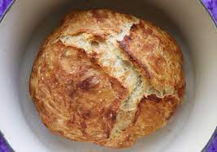

No-Knead Bread

Description
I think this gets credit as my gateway drug into the world of home bread baking. It's so simple and mostly hands off that it made it seem possible to stop buying disappointing bread from the grocery store.
There are lots of versions out there, but I always tended to use Mark Bittman's recipe.
Ingredients
- bread flour
- salt
- yeast
- water
Steps
- stir together ingredients
- cover and leave bowl on counter overnight
- loosely form a ball and let rest while oven preheats
- preheat oven and covered dutch oven
- carefully dump the bread in the dutch oven and close the lid
- when done, remove to cooling rack...don't burn tongue on steamy bread!
Back to Main Page